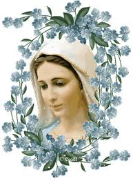

“OLHAR DE MÃE”
De Olhar tranquilo, sereno e
belo, MARIA, NOSSA MÃE SANTÍSSIMA, sempre aponta o Olhar para o SEU FILHO,
convidando-nos a dar testemunho DELE,
seguindo corajosamente os passos de
JESUS. E em todas as oportunidades, nos guia exatamente em direção DELE, a fim
de estarmos juntos e permanecermos no Amor do SEU Querido e Amado FILHO JESUS.
Por isso mesmo, nas imagens da
SANTÍSSIMA VIRGEM MARIA, sejam elas de gesso, granito ou simplesmente quadros
com moldura e vidro, elas apresentam uma característica interessante que merece
ser observada com mais frequência, porque sugere ao cristão fiel, algo muito
especial que abraça o sentimento, sempre que nos detemos em admirar a SUA
Imagem, com ternura e amor. A face de NOSSA SENHORA se reveste de algo
indefinível que de maneira misteriosa, emite um entendimento claro, mas
inexplicável, belo, cativante e verdadeiro. Faz compreender uma mensagem, uma
recomendação, e até um conselho de MÃE, ao nosso coração. Isto não é imaginação.
É realidade, que proporciona bem-estar e orientação no caminho existencial.
Na verdade, todos nós sabemos
que o olhar é um órgão extremamente importante e sensível. No dia a dia da
humanidade, quantas coisas se podem dizer através de um olhar! Uma manifestação
de estima; de encorajamento, de compaixão, de saudade... Mas também através do
olhar pode ser manifestado censura, contra a inveja demonstrada por alguém; pode
revelar soberba e até mesmo ódio, por determinados comportamentos humanos.
Então, verdadeiramente em muitas ocasiões, um simples olhar diz mais do que
muitas palavras; e até podemos acrescentar que o olhar diz aquilo que as
palavras não conseguem dizer, por uma infinidade de razões, ou porque não ousam
dizer, ou mesmo, porque não tem a coragem de falar.
Mas esta variedade de
comportamentos humanos, através do olhar, quer apenas evidenciar que a força do
olhar está ligada ao cérebro, e dele, ao coração. Assim para as pessoas que
olham com amor e carinho, e quer apreciar a imagem da SANTÍSSIMA VIRGEM MARIA,
sem a menor dúvida, elas também terão a nítida certeza de que a MÃE SANTÍSSIMA
da mesma forma estará olhando para cada uma delas em particular. E por ser a
VIRGEM MÃE tão querida e amada, nos olha como uma verdadeira e protetora MÃE.
NOSSA SENHORA nos olha com um olhar repleto de ternura, pleno de misericórdia e
transbordante de incalculável Amor. Por que foi assim também, que ELA, a nossa
tão querida e amada MÃE SANTÍSSIMA, em todos os momentos da SUA Vida, sempre
olhou para o SEU DIVINO e tão Amado FILHO JESUS.
As pessoas, nos seus afazeres
quotidianos, muitas vezes possuem trabalhos exaustivos que lhes causam no final
de cada dia ou da semana, grande desgaste físico e mental, pela sequência dos
problemas; em muitas oportunidades o trabalho causa até tristeza, por não ter
alcançado os seus objetivos daquele dia, ou daquela semana ou da quinzena; e
também, em muitas outras ocasiões, o trabalho pode causar um abominável desanimo
pelo excesso do cansaço que produz, e não ser recompensado por sua dedicação; e
assim, não tendo nem a oportunidade de receber o carinho de uma palavra amiga e
fraterna, para amenizar as suas dores e desapontamentos, muitas pessoas sofrem.
O cansaço físico além de incidir sobre diversas regiões do organismo, também
rouba a tranquilidade e a paz no coração. É nestas ocasiões que se faz
necessária a devoção espiritual das pessoas. A oração de um modo geral, quando
rezada com fé e disposição, é a força mais poderosa e capaz que se realiza num
curto espaço de tempo, proporcionando à necessária tranquilidade e a paz
espiritual. Esta paz incidirá sobre todo o organismo, neutralizando as
amarguras, os aborrecimentos e desgastes. E isso acontece, em todas as
iniciativas honestas e adequadas, que ensejam a procura de nossa MÃE SANTÍSSIMA.
Isto porque, NOSSA SENHORA carinhosamente sempre responderá ao afeto de todas as
orações feitas com amor e ternura, infundindo paz, coragem e um especial carinho
nos corações que suplicam.
 As providências devem ser
realizadas com convicção. Por exemplo, na sala, ou no quarto das residências, de
um modo geral, sempre são encontradas as imagens ou quadros da SANTÍSSIMA VIRGEM
MARIA. Então, no momento ideal, com bastante carinho e fé no coração,
aproximem-se da imagem de NOSSA SENHORA. Na tranquilidade e na paz do seu lar,
coloque uma cadeira bem nas proximidades DELA e reze uma AVE MARIA, calmamente,
sem pressa, olhando para ELA, como se estivesse conversando com a nossa querida
e amada MÃE SANTÍSSIMA. Com plena certeza, aquele ou aquela, que assim proceder,
com o coração cheio de amor suplicando o carinho e o consolo de NOSSA SENHORA,
logo sentirá no âmago da sua alma, as palavras da SANTÍSSIMA VIRGEM MARIA, que
inundarão a sua existência. Até podemos imaginar o lindo conselho de NOSSA MÃE
SANTÍSSIMA:
As providências devem ser
realizadas com convicção. Por exemplo, na sala, ou no quarto das residências, de
um modo geral, sempre são encontradas as imagens ou quadros da SANTÍSSIMA VIRGEM
MARIA. Então, no momento ideal, com bastante carinho e fé no coração,
aproximem-se da imagem de NOSSA SENHORA. Na tranquilidade e na paz do seu lar,
coloque uma cadeira bem nas proximidades DELA e reze uma AVE MARIA, calmamente,
sem pressa, olhando para ELA, como se estivesse conversando com a nossa querida
e amada MÃE SANTÍSSIMA. Com plena certeza, aquele ou aquela, que assim proceder,
com o coração cheio de amor suplicando o carinho e o consolo de NOSSA SENHORA,
logo sentirá no âmago da sua alma, as palavras da SANTÍSSIMA VIRGEM MARIA, que
inundarão a sua existência. Até podemos imaginar o lindo conselho de NOSSA MÃE
SANTÍSSIMA:
- “Coragem, filho
ou filha, EU estou sempre aqui. Seja perseverante e fiel na luta de cada dia. NOSSO
SENHOR recompensará o seu empenho. Reze sempre o seu Terço.”
NOSSA SENHORA nos conhece muito
bem, ELA é a nossa SANTA MÃE, e sabe quais são as nossas alegrias e as nossas
dificuldades, as nossas esperanças e as nossas desilusões. ELA conhece os nossos
cansaços e as nossas intranquilidades, do mesmo modo que sabe como sentimos o
peso das nossas fraquezas e dos nossos pecados. Assim, mais do que nunca,
principalmente nestes momentos, ELA deve ser procurada, porque sendo ELA nossa
MÃE, com certeza, a SANTÍSSIMA VIRGEM MARIA irá proporcionar o conselho próprio
para aquele momento da nossa vida. ELA poderá dizer a cada um de nós:
- “Levanta-te,
filho ou filha, vai à Igreja e se confesse com um Sacerdote. Ele irá purificar a
sua alma, limpando os seus pecados. Reze a penitência que Ele mandar diante do MEU
FILHO JESUS que está lhe esperando no Sacrário. Depois, durante a Santa Missa,
receba o MEU AMADO FILHO JESUS na SAGRADA EUCARISTIA. A paz voltará ao seu
coração e a sua vida, e o meu amor acompanhará os seus passos”.
Verdadeiramente NOSSA SENHORA
está sempre presente na vida de todos nós. ELA se preocupa com todos os seus
filhos, porque ELA quer o nosso bem-estar, e deseja que um dia, também estejamos
na eternidade feliz, junto a SANTÍSSIMA TRINDADE, junto DELA, dos ANJOS e de
todos os SANTOS, na glória eterna.
Então, não tem sentido, um
cristão sincero e praticante se desesperar, diante de acontecimentos que surgem
no quotidiano do trabalho, ou no seu próprio lar. Existem pessoas boas e más.
Ninguém tem a capacidade de descobrir o interior dos outros. Por essas razões, o
bom senso, a paciência e o equilíbrio emocional devem ser cultivados em todas e
quaisquer circunstâncias, porque sem dúvida, através deles receberá uma ajuda
preciosa e infalível.
MARIA, quando era jovem mulher,
ao longo da sua existência sempre amou DEUS PAI. Frequentava a Sinagoga dos
judeus, e sempre, avidamente procurava e lia os pergaminhos com as histórias
bíblicas, que descrevia o caminho dos Profetas, as suas atividades e os seus
contatos com DEUS PAI. ELA ficava inundada de amor e de uma felicidade imensa no
CORAÇÃO.
Nascendo JESUS, o FILHO DE DEUS,
por Obra do DIVINO ESPÍRITO SANTO, SUA vida se concentrou nos cuidados e no
desenvolvimento DELE, de NOSSO SENHOR JESUS CRISTO. MARIA mantinha viva em SEU
Coração a certeza consciente e absoluta, de que AQUELA MARAVILHOSA CRIANÇA era o
SEU FILHO E O SEU DEUS.
JESUS cresceu, e se fez homem.
Certo dia, no inicio da SUA Missão, foi convidado para as Bodas de um
Matrimônio, em Cana da Galiléia, no qual também estava presente SUA MÃE,
e também alguns Discípulos e muitos amigos do casal nubente. Mas logo no início da
festa, o vinho acabou. Ao pedido da SUA MÃE, JESUS realizou o primeiro milagre.
Quando ELE mandou os serventes encher as talhas com água e levá-las ao mestre da
cerimônia, os servos ficaram parados cheios de dúvida... (Acabou o vinho e ELE
nos manda levar água para o mestre?) SUA SANTA MÃE MARIA, percebendo o fato,
estimulou os serventes a executar a ordem que JESUS lhes transmitira,
dizendo-lhes uma frase que é um verdadeiro ensinamento para a vida de todos nós:
“FAZEI TUDO O QUE ELE VOS
DISSER”. São palavras vivas e decisivas,
palavras de confiança e amor, que servem de modelo ao comportamento humano, daqueles
que crêem e amam DEUS, e querem servi-LO com dedicação. O resultado foi maravilhoso!
Os serventes encheram com água as talhas de pedra que eram usadas para limpeza das mãos,
conforme o rito de purificação dos judeus, e as levaram ao mestre-sala, que ao provar,
constatou a realidade do admirável vinho que as talhas continham. (Jo 2, 2-11)
estava presente SUA MÃE,
e também alguns Discípulos e muitos amigos do casal nubente. Mas logo no início da
festa, o vinho acabou. Ao pedido da SUA MÃE, JESUS realizou o primeiro milagre.
Quando ELE mandou os serventes encher as talhas com água e levá-las ao mestre da
cerimônia, os servos ficaram parados cheios de dúvida... (Acabou o vinho e ELE
nos manda levar água para o mestre?) SUA SANTA MÃE MARIA, percebendo o fato,
estimulou os serventes a executar a ordem que JESUS lhes transmitira,
dizendo-lhes uma frase que é um verdadeiro ensinamento para a vida de todos nós:
“FAZEI TUDO O QUE ELE VOS
DISSER”. São palavras vivas e decisivas,
palavras de confiança e amor, que servem de modelo ao comportamento humano, daqueles
que crêem e amam DEUS, e querem servi-LO com dedicação. O resultado foi maravilhoso!
Os serventes encheram com água as talhas de pedra que eram usadas para limpeza das mãos,
conforme o rito de purificação dos judeus, e as levaram ao mestre-sala, que ao provar,
constatou a realidade do admirável vinho que as talhas continham. (Jo 2, 2-11)
No momento da Cruz, no Calvário,
ELA acompanhada das Santas Mulheres e alguns Discípulos, sofria as dores da
angústia, da insensatez, da covardia, da desumana selvageria da flagelação, e
das terríveis dores de JESUS Crucificado preso a sua Cruz. Triste, MARIA ouvia
as últimas recomendações do SEU DIVINO e AMADO FILHO, nas SUAS últimas Palavras,
quando ELE anunciava o SEU derradeiro Testamento. JESUS, cheio de amor, muito
compenetrado apesar de SUAS dores, vendo SUA MÃE e, perto DELA, o Discípulo (São
João Evangelista) a quem ELE amava, disse à SUA MÃE: “Mulher, eis o TEU filho!” Depois disse ao Discípulo:“Eis a TUA Mãe!” (Jo 19,25-27)
Estas palavras de JESUS têm um
significado muito profundo, sobretudo demonstram a grandeza infinita do SEU
DIVINO AMOR por todos nós. Num gesto de extremoso carinho, nos últimos momentos
da sua existência terrestre, completou de modo admirável a SUA Maravilhosa
Missão, determinando que João Evangelista, o Discípulo amado, ali representasse
a humanidade de todas as gerações, a humanidade que ELE sempre amou e “por
quem”, derramava o SEU SAGRADO E PRECIOSO SANGUE. E como atitude derradeira,
entregou a sua QUERIDA e AMADA MÃE para ser a MÃE ESPIRITUAL dessa “mesma
humanidade”, para nos proteger, guiar e nos ajudar em todas as necessidades da
vida, a fim de, com a preciosa AJUDA DELA, cada um conseguisse realizar de modo
completo o projeto da sua existência e alcançasse a eternidade feliz.
E assim, NOSSA SENHORA que
sempre ajudou a todos que suplicavam o SEU auxilio, pelo SEU admirável e
misericordioso CORAÇÃO, agora, como NOSSA MÃE SANTÍSSIMA,“oficialmente consagrada”
pela bondade indizível de JESUS, SEU DIVINO
FILHO, nos últimos momentos de SUA vida na CRUZ, com a maior amplidão da
SUA dedicação, passou a socorrer a todos que buscam a SUA tão querida e
preciosa proteção.
Isto porque, a SANTÍSSIMA VIRGEM
MARIA desde o início da SUA Vida nos ensinava a olhar para o Céu e a suplicar a
infinita bondade Divina. No dia da Anunciação, quando ELA soube pelo Arcanjo que
sua prima Isabel, estava grávida pela Vontade de DEUS, preparou-se para viajar e
auxiliar a sua parenta. Quando lá chegou a fim de prestar o SEU auxílio, SUA
Prima Isabel veio ao seu encontro, repleta de alegria e exclamou:
“Bendita és TU entre as mulheres,
e bendito é o fruto do TEU Ventre! Donde me vem que a MÃE do MEU SENHOR me visite?
Pois quando a TUA saudação chegou aos meus ouvidos, a criança estremeceu de
alegria em meu ventre. Feliz a que acreditou, pois o que LHE foi dito da parte
do SENHOR (DEUS PAI através do Arcanjo
Gabriel) será cumprido!”
 Sim, MARIA, NOSSA SENHORA
é bem-aventurada pela sua imensa fé em DEUS, pois o OLHAR do SEU CORAÇÃO, sempre
se mantinha fixado em DEUS PAI; fixado depois no FILHO DE DEUS que
carinhosamente trouxe em SEU Ventre. E assim, quando JESUS nasceu e cresceu,
MARIA mantinha SUA Atenção e SEUS Cuidados NELE. Apreciou em diversas
oportunidades, JESUS pregando Sermões, abrindo os corações do povo para
conhecerem o DEUS da Vida, e compreenderem a verdade da existência, o cultivo do
amor, da paz e da felicidade.
Sim, MARIA, NOSSA SENHORA
é bem-aventurada pela sua imensa fé em DEUS, pois o OLHAR do SEU CORAÇÃO, sempre
se mantinha fixado em DEUS PAI; fixado depois no FILHO DE DEUS que
carinhosamente trouxe em SEU Ventre. E assim, quando JESUS nasceu e cresceu,
MARIA mantinha SUA Atenção e SEUS Cuidados NELE. Apreciou em diversas
oportunidades, JESUS pregando Sermões, abrindo os corações do povo para
conhecerem o DEUS da Vida, e compreenderem a verdade da existência, o cultivo do
amor, da paz e da felicidade.
Também, passou por dores e
cruzes da sua vida, quando ELA triste, e derramando muitas lágrimas, também
contemplou o SEU QUERIDO e AMADO FILHO na Cruz. E ali permaneceu até o final,
até o integral cumprimento da Missão Existencial do FILHO DE DEUS. Depois, quase
sem forças, acompanhou o féretro e viu quando sepultaram o SEU DIVINO e AMADO
FILHO JESUS na rocha mortuária.
Após a Ressurreição do SENHOR,
repleta de felicidade, acompanhou a expansão das Comunidades Cristãs em muitos
lugares, e nas reuniões entusiasmadas dos cristãos, na Celebração da Fração do
Pão, e também na Adoração do SANTÍSSIMO SACRAMENTO. NOSSA SENHORA, para alegria
de todos, às vezes falava algumas palavras, realçando sempre o imenso e perfeito
Amor de SEU DIVINO FILHO, por cada um de nós. Nossa SANTÍSSIMA MÃE poderia falar
assim: “Olhem para o MEU FILHO
JESUS, e mantenham os olhos fixos NELE, procurem escutá-LO, falar com ELE. Mesmo
estando oculto, ELE olha para cada um de vocês com Amor... Permaneçam sempre
olhando na Face do MEU FILHO JESUS e peçam-LHE com decisão e vontade forte: o
Amor, o Respeito, o Trabalho, a Dignidade e a Paz Espiritual na Vida. Mostrem
Coragem e Decisão, porque ELE Ama cada um de vocês bem antes de vocês terem
nascido, não apenas com Palavras, mas com a SUA Própria Vida.”
Naquela época, principalmente
os APÓSTOLOS buscavam sempre estar próximos da MÃE DE JESUS, pois queriam a
companhia DELA, e sempre solicitavam os conselhos e as sugestões que a MÃE lhes
concedia. Por outro lado, quando uma oportunidade era mais favorável, eles
suplicavam a MARIA, NOSSA SENHORA que lhes contassem fatos e acontecimentos da
vida de NOSSO SENHOR, assim como os hábitos que ELE cultivava em casa, e quais
eram as SUAS preferências... Eram de fato verdadeiras lições de amor, repletas
de muita ternura e envolvidas com um profundo sentimento de saudade. Todas as
vezes que NOSSA SENHORA descrevia para os APÓSTOLOS, os belos costumes do SEU
QUERIDO E AMADO FILHO JESUS e como ELE gostava de organizar e fazer as SUAS
coisas em casa, ELA ficava muito triste, verdadeiramente muito saudosa. No final
da narrativa ELA sempre tinha que suspirar forte e prender a respiração,
tentando com este artifício segurar as belas e volumosas lágrimas que logo
brotavam dos SEUS LINDOS OLHOS, e que ligeiras percorriam a SUA FACE emocionada,
e caiam no chão.
O exemplo de NOSSA MÃE
SANTÍSSIMA sempre constituiu sugestão e estimulo para a vida de todos nós.
Assim, olhando para a imagem de NOSSA SENHORA, busquemos carinhosamente com a
força do coração e da mente conversar com ELA e suplicar a SUA preciosa e tão
querida ajuda. Lembre-se sempre, que conversar com a MÃE SANTÍSSIMA é conversar
com a NOSSA QUERIDA E AMADA MÃE DE NOSSO DEUS.

 PRÓXIMA PÁGINA
PRÓXIMA PÁGINA
PÁGINA ANTERIOR
RETORNA AO ÍNDICE